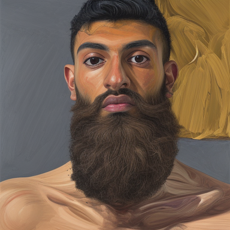
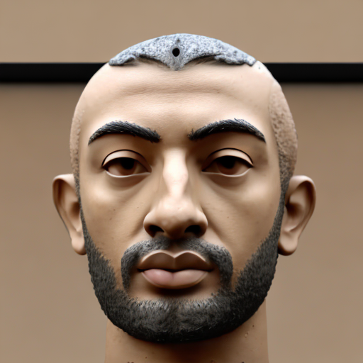
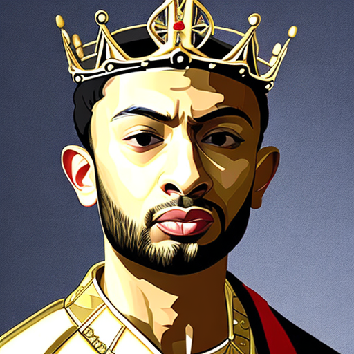

I'm Paresh. I'm a machine learning practitioner from London.
Welcome to my corner of the web where I share my passions.
I love technology and am deeply intrigued by the potential of AI.
Right now, I'm particularly interested in the social implications of generative AI.
Take a look around. Open to connecting and exploring meaningful collaborations!
Quick facts
AI
I have a masters in Data Science and Machine Learning from LSE. I've been coding and learning about AI for 5+ years.
Travel
I recently been backpacking around South America and have visited over 20 countries!
Sports
I've played basketball for a decade and recently ventured into football and tennis.
Reading
I've read 20 books this year. Behavioural psychology is my favourite genre.
Journey
Pre-university: developing foundational skills
1995 — 2014
Born in Milton Keynes, before shortly moving to Kent.
Developed passions in basketball, hip hop and maths.
Undergraduate years: pinpointing passions
2014-2018
I had high hopes of working in finance.
I studied Economics and Finance and worked at HM Treasury and Goldman Sachs, figuring out my likes and dislikes.
Turned down a 5 in 6000 job offer from Goldman Sachs to see if data science was more my vibe.
Post Graduate: turning point
2018-2019
Studied how Data Science and Machine Learning can solve social science problems.
Learnt to program and sharpened technical skills.
Found a new passion.
Becoming a Data Scientist: aspirations to reality
2019-2021
Joined a big Data Science and Engineering team at IBM.
Realising how little I knew, but so much to learn from everyone's unique backgrounds!
Then, well... Covid happened.
Moving to Senior: expanding responsibility and business acumen
2021-present
Joining a Digital Transformation program at ITV as a first time manager.
Learning about leading, business, people, team dynamics and strategy.
Enhancing technical ability while collaborating with a cross functional product team.
Testimonials
Jatin (brother)
As an official sibling reviewer, I can vouch that Paresh taught me everything I know about machine learning. Would thoroughly recommend.

Paresh 2.0
Coming to you from a Generative AI experiment gone... right?
If Paresh is even half as proficient as me, then you're in for a treat.
Just remember, if you ever see the two of us in the same room... don't panic.
Mum
⭐⭐⭐⭐⭐ I always said you had a knack for techy things, ever since you taught me how to set the microwave timer. Your website? Proof I was right! - Love Mum

Ancient Philosopher Paresh
In my time, we inscribed thoughts on stone. Your digital stone is much more dynamic and interactive!
Paresh 3000
Travelled back in time to write this review. Just wanted to say, this website was the foundation of our digital empire.
You won't believe it, but this website is still in style. Some things are just timeless. Your fashion sense however...
p.s. buy those stocks I've been thinking about. You'll thank me later!

King Paresh VIII
By royal decree, I once held a grand feast in honor of Paresh. The royal court was abuzz with talk of this website.
Of my many kingdoms, this digital realm might just be my favorite. All hail the webmaster... five royal seals of approval!
Jatin (brother)
As an official sibling reviewer, I can vouch that Paresh taught me everything I know about machine learning. Would thoroughly recommend.